Префектура Тояма · Такаока · ремесло
Кодзи Ории из Такаоки: мастер, который красит медь, как художник холст
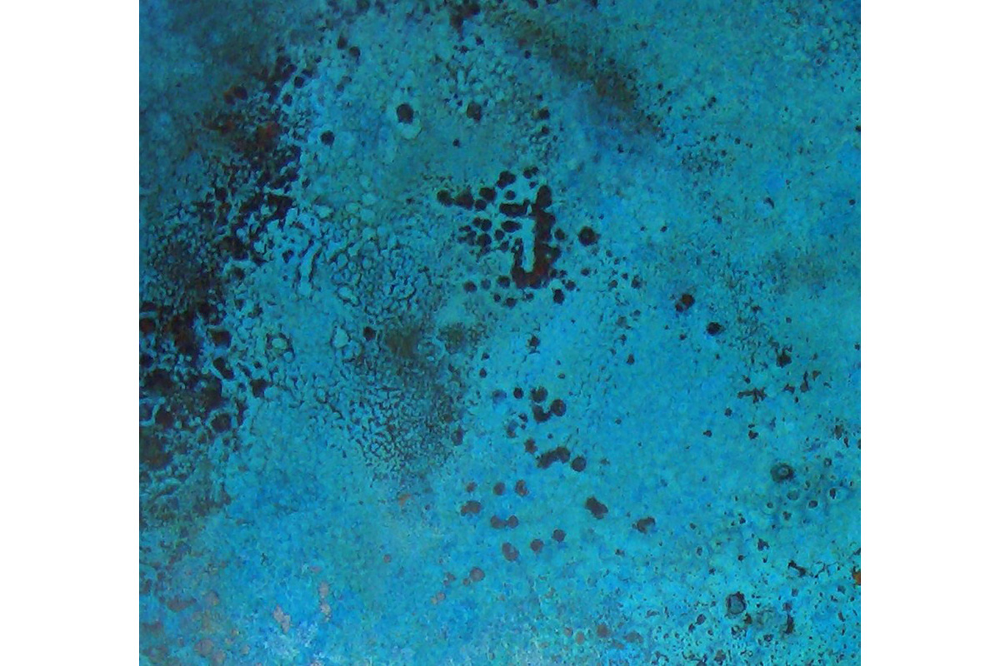
Такаока четыре века отливает бронзу и медь, а у каждой отливки есть ещё одна жизнь: её окраска. Кодзи Ории, третье поколение семьи мастеров цветной патины, превратил эту старую работу в палитру, которую знают архитекторы, дизайнеры и парижский магазин Fleux.
Возвращение
Из Токио обратно в Такаоку
Такаока, город в префектуре Тояма, известна литьём с эпохи Эдо. Здесь делают буддийские статуи, утварь для храмов и колокола, и по этим изделиям город первый в Японии. Вокруг литейщиков сложилась целая сеть мастерских, и у каждой своя операция. Семья Ории занимается именно цветом. Мастерскую окраски металла основал ещё дед Кодзи Ории.
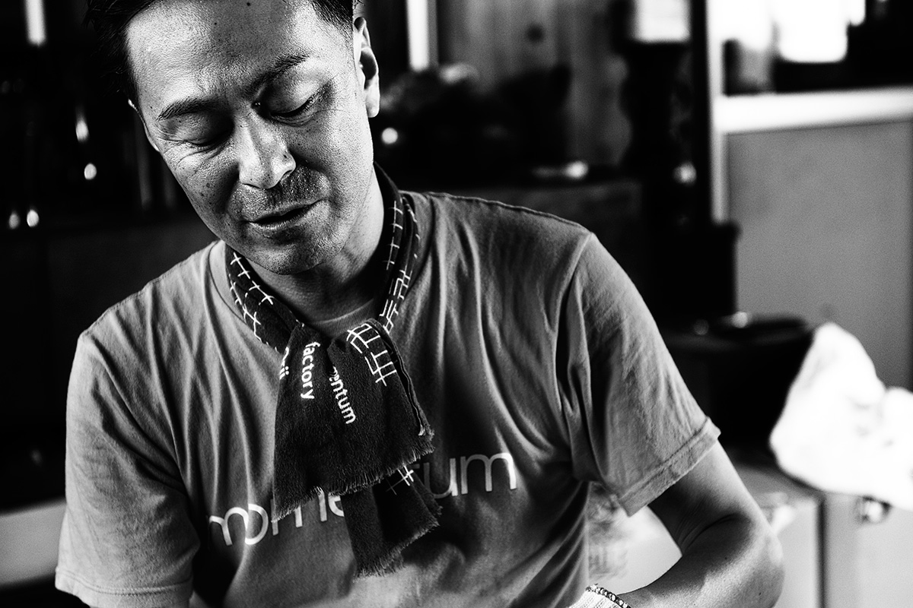
Сам Кодзи Ории, родившийся в 1970 году, в молодости о семейном деле не думал. В годы «экономики мыльного пузыря» он работал в Токио в компьютерной сфере, заказов хватало, жизнь шла легко. Всё изменила одна фраза дяди.
«Добиться успеха в Токио неплохо. Но если ты не продолжишь дело семьи, четырёхсотлетняя традиция Такаоки на этом закончится!»
дядя мастера
В 26 лет он вернулся домой и сразу столкнулся с реальностью: доход упал вдвое по сравнению с токийским. После краха «пузыря» ремёсла и культура первыми попадают под сокращение и у компаний, и у покупателей. Продажи всего ремесленного района упали до двух третей от лучших лет, и мастерские, которым нечем было ответить, закрывались одна за другой.
«Чтобы выжить, мастеру мало хранить и передавать традицию. Нужно самому прокладывать путь и меняться. Не повторять то, что было, а создавать своё и перестать просто ждать заказов»
Кодзи Ории
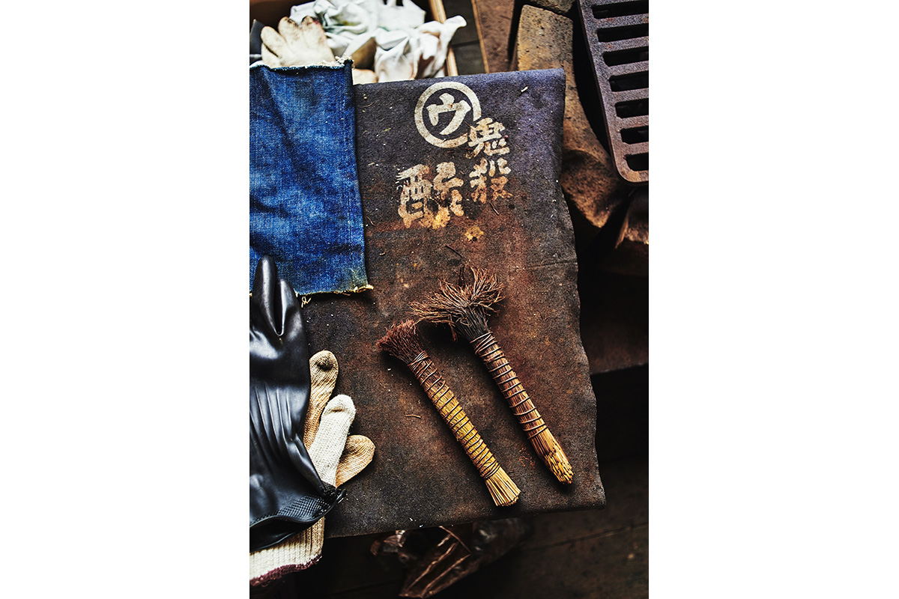
Учась у отца традиционным приёмам, он параллельно ставил бесчисленные опыты с составами и способами окраски. Главным правилом он считал одно: не ломать основу.
«Самое ценное в Такаоке то, что здесь за сотни лет родилось незаменимое мастерство. Если перевернуть его с ног на голову, всё теряет смысл. Моя задача была в том, чтобы сохранить основу и при этом смотреть вперёд»
Кодзи Ории
Поиск
Цвет, который родился случайно
Традиционной окраской в Такаоке покрывали статуэтки, утварь для чайной церемонии, вазы, буддийские статуи и памятники. Со временем такие вещи стали продаваться всё хуже. Первый собственный цвет Кодзи Ории получил около 2000 года, и, по его словам, случайно: в одном из опытов вышел интересный оттенок. Он только что принял семейное дело, привычных рамок у него ещё не было, и он стал пробовать дальше.
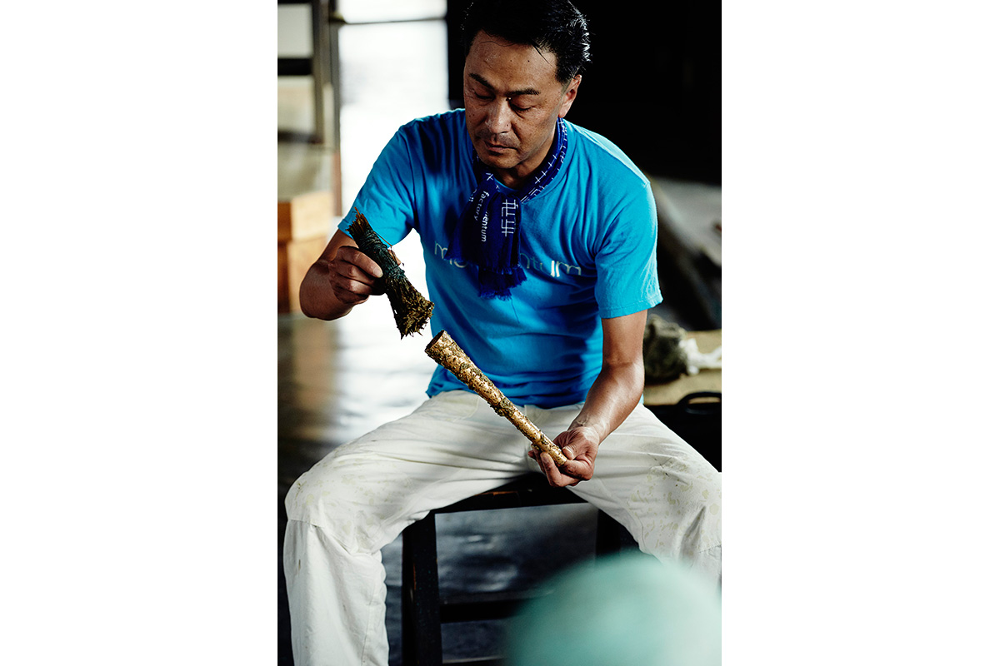
Отправной точкой стал вопрос стиля. Ории всегда любил моду и интерьер, начиная с мебели Имзов, и однажды заметил, что у него дома нет ни одной вещи из Такаоки. Тогда он решил сделать то, что захотел бы купить сам. Он разработал способ окрашивать тонкий прокатный лист толщиной меньше миллиметра и покрыл им столешницу своего любимого стола.
Столешницу оценили люди, с которыми мастерская раньше никогда не работала: дизайнеры и архитекторы. С их советами окрашенный металл превратился в отделочный материал. Вместо статуй и утвари, которые заказывали местные оптовики, мастерская начала делать панели для интерьеров. Её металл появился на стенах смотровой площадки Роппонги-Хиллз в Токио, в дорогих отелях, ресторанах, офисах и магазинах, и со временем архитектурные материалы стали давать почти половину продаж.
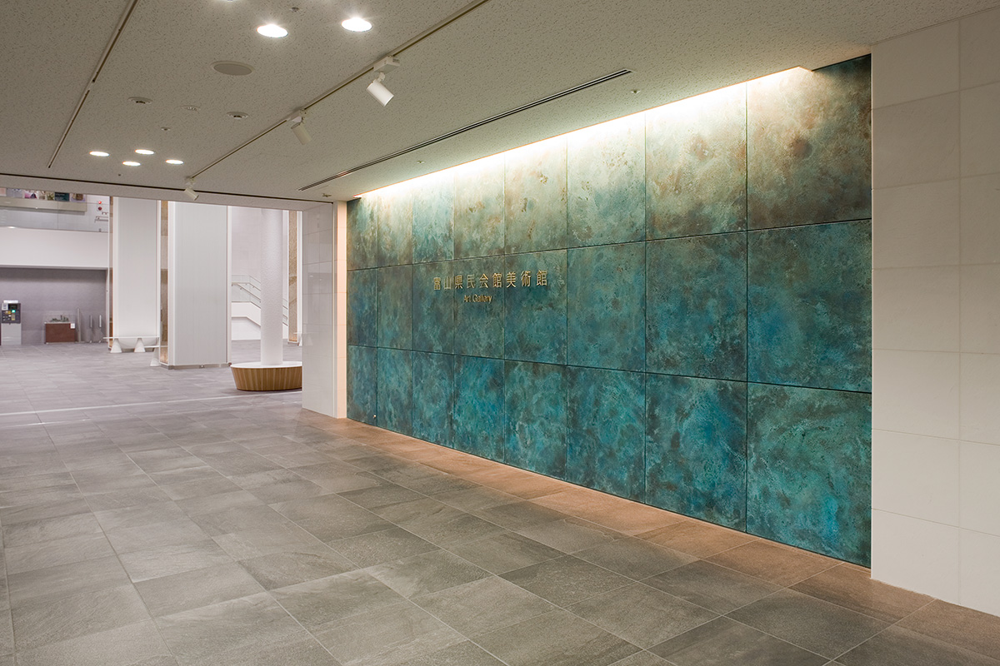
В 2008 году мастер основал компанию Momentum Factory Orii. В 2012 году вместе с дизайнером из префектуры Айти он запустил марку tone и занялся предметами интерьера. Мастерская начала продавать сама, без посредников, и продажи выросли примерно в пять раз по сравнению с худшими годами.
«Раньше мы говорили только с местными оптовиками, а сегодня общаемся с людьми самых разных профессий и с теми, кто пользуется нашими вещами. Стало ясно, что нужно рынку и что делать дальше. Говорить от своего имени большая ответственность, но и огромная радость»
Кодзи Ории
Палитра
Цвета «волшебника»
Ории называют волшебником цвета. Рисунок и глубина тона зависят от состава реактивов и от того, как сочетаются приёмы, и мастер умеет управлять ими почти как художник красками.
Самый узнаваемый цвет мастерской носит название «синий Ории». Официально это пятнистая бронзовая патина, которую дают пары аммиака: медь меняет цвет под газом, и такой яркой окраски больше нигде не делают. Наравне с ним стоит «павлиний» цвет на латуни, изобретённый самим Ории: в нём словно смешаны красный, жёлтый и синий, отсюда и название.
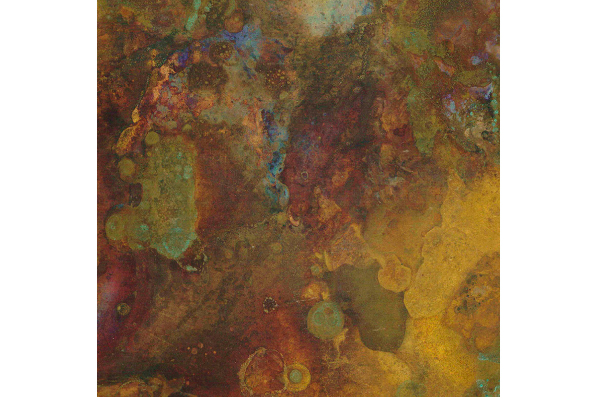
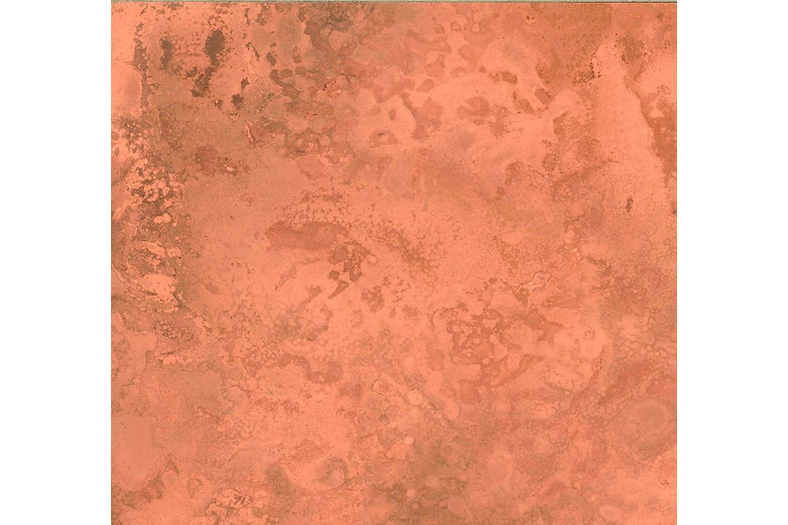
Старые приёмы Такаоки
Новые цвета выросли из традиционных техник, и мастерская продолжает работать ими. Для окраски «ни-иро» металл варят в котле с раствором медного купороса и углекислой меди. Есть и неожиданная деталь: в этой технике используют тёртую редьку дайкон.
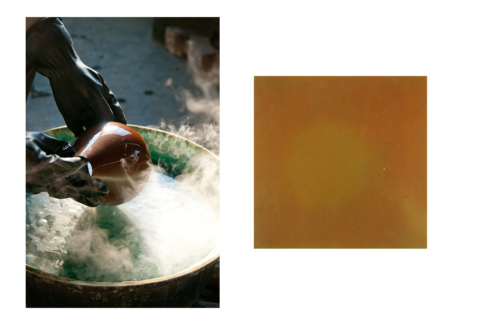
В технике «охагуро» металл натирают метёлкой «нэгобоки» из связанных сердцевин рисовой соломы. Мастера говорят, что без такой метёлки характерного блеска охагуро не добиться.
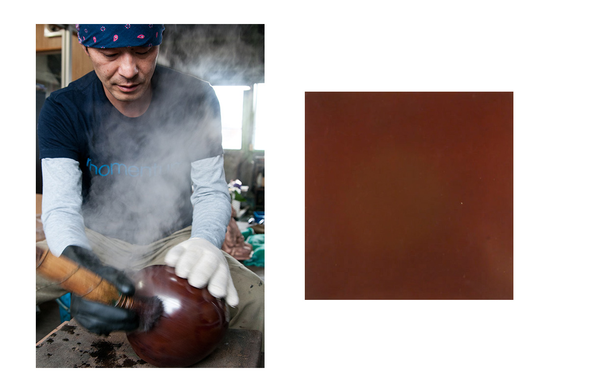
Для «нука-яки» берут массу из рисовых отрубей, как для квашения овощей, смешивают её с реактивами, наносят на металл и обжигают горелкой. Там, где отруби сгорели, остаются пятна, и из них складывается рисунок.
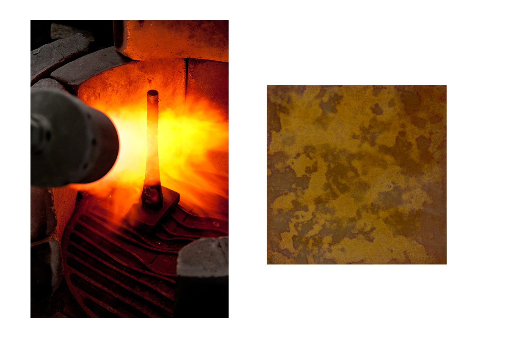
За всем этим разнообразием стоят четыреста лет ремёсел Такаоки, прежде всего бронзы и лака. Мастера хранили традицию, иногда меняли её и донесли до наших дней.
Вещи
Медь в доме и в Париже
Металлические цвета Ории живут и в обычных вещах. Яркие предметы интерьера и посуда марки tone рассчитаны на каждый день.
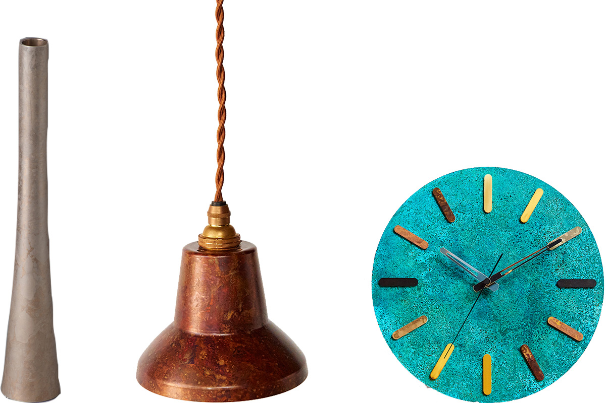
Осенью 2017 года парижский магазин Fleux провёл проект, в котором парижские дизайнеры работали с ремёслами Такаоки. Панели Ории превратились в «OBON», подносы для офиса и стола.
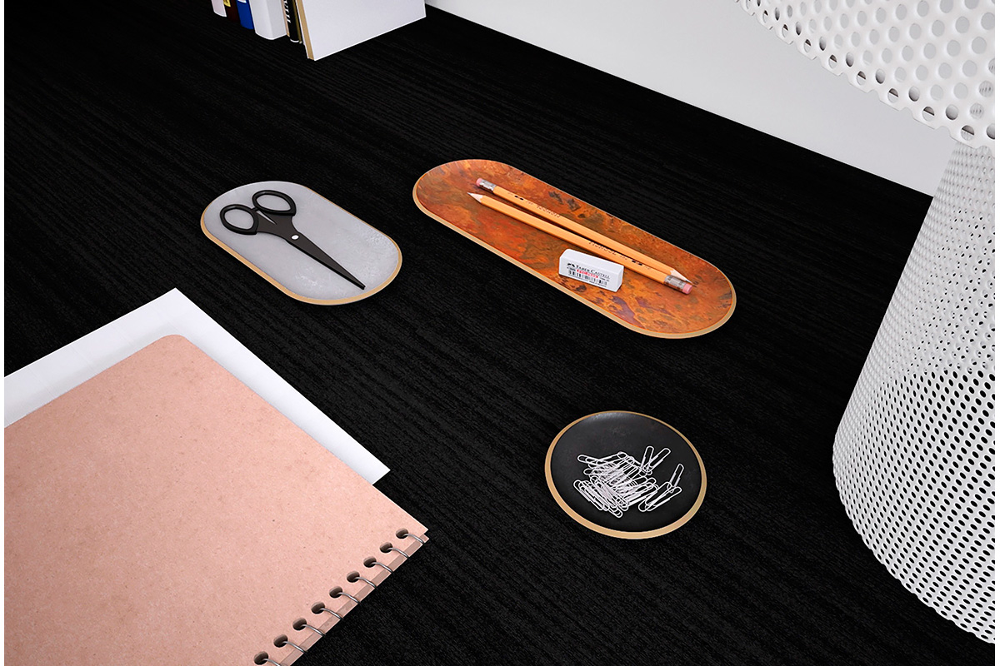
Возможности медной окраски, похоже, почти безграничны, и за пределами Японии их уже заметили.
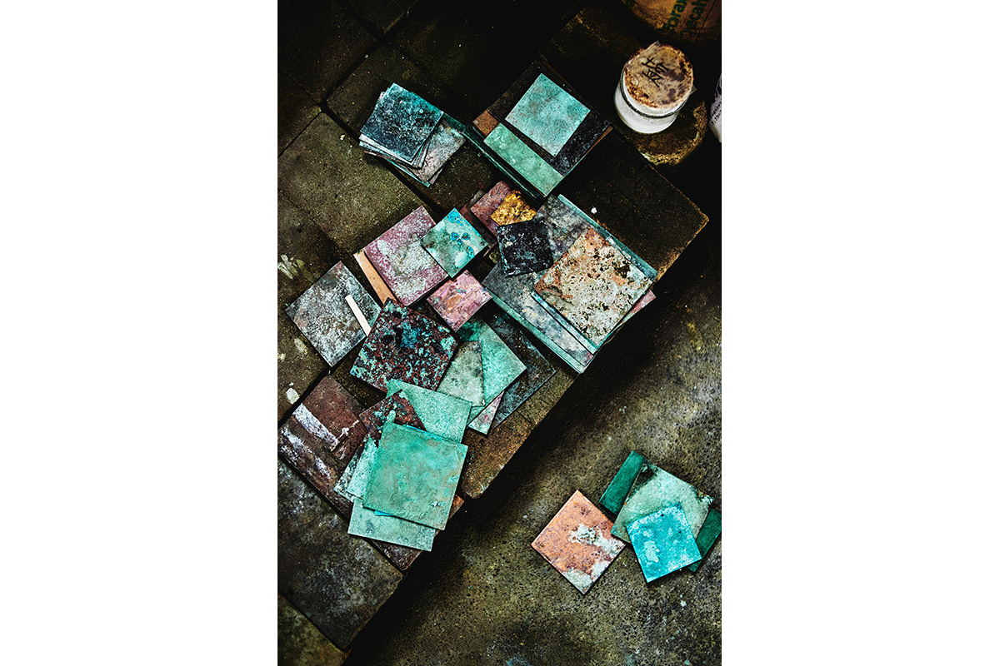
Цвет на подкладке
Однажды цвет Ории ушёл с металла на ткань. Мастер давно хотел попробовать себя в моде и сам вставлял окрашенные медные пластинки в рабочие комбинезоны и сумки. Решающим стал разговор с портным, его земляком из Такаоки и выпускником той же школы. Тот давно знал «синий Ории» и печатную бумагу «Ориигами» с его цветами, которую можно гнуть и складывать, и предложил перенести узоры на подкладочную ткань.
Разговор состоялся в ноябре 2018 года, ткань была готова к концу года, а в феврале 2019 года сшили первый костюм. Так появились ORII FABRICS: двенадцать цветов на атласной подкладке.
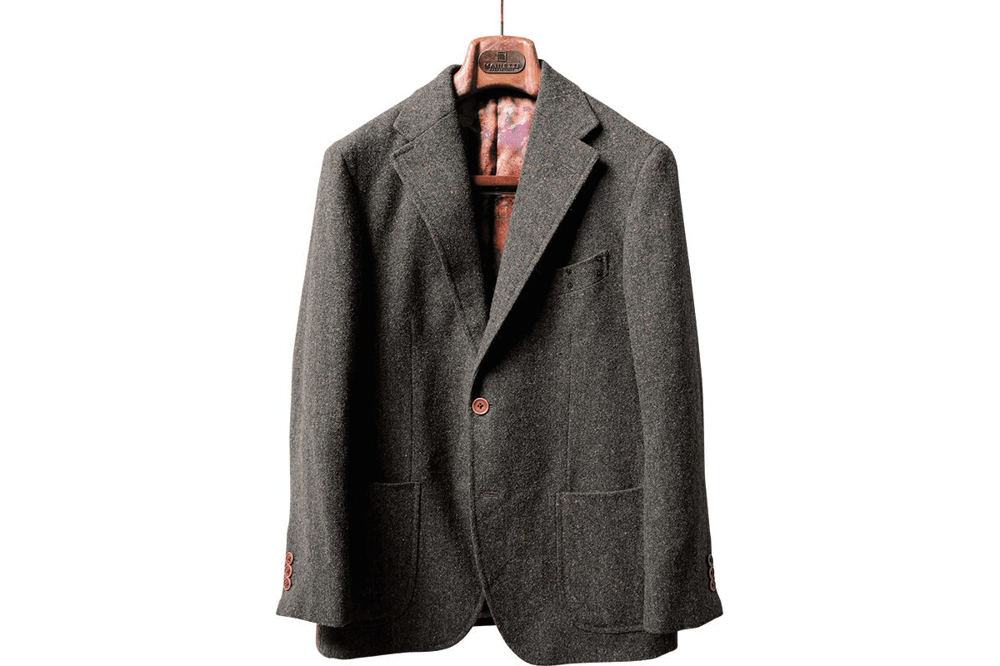
«Я был тронут. Атлас получился очень приятный, и вышло то, чего на свете ещё не было»
Кодзи Ории
Будущее
Чтобы ремеслу было кого передать
«Мир мастеров держался на строгой иерархии, но учитель и община заботились обо всём, и с ремеслом в руках ты не оставался без куска хлеба. Сегодня так уже не получится»
Кодзи Ории
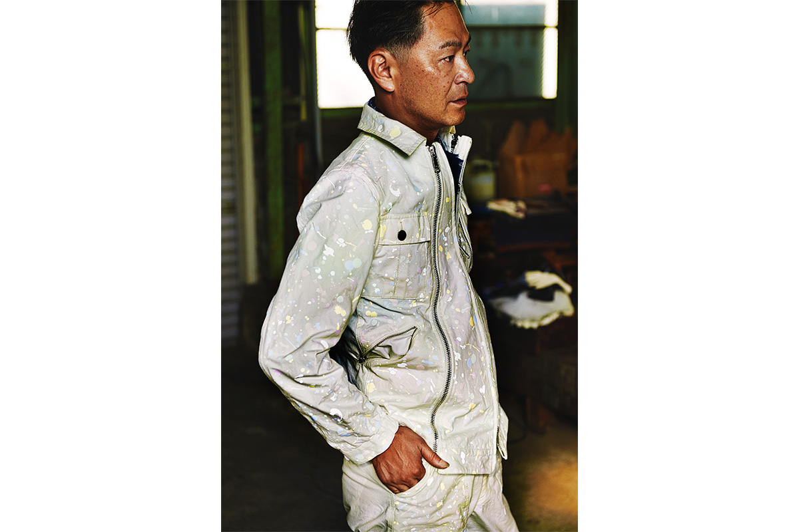
Ории прочувствовал это на себе и с тех пор старается постоянно знакомиться с новыми людьми. После работы он идёт туда, где собираются люди других профессий. В длинные выходные садится в свой Volkswagen Type 3 1969 года и едет к озеру Кацура, в часе езды от дома, где можно делать всё, кроме моторного спорта: ловить рыбу, ходить на каноэ. Чем больше работы, тем важнее, по его словам, выбраться в совсем другой мир и перезагрузиться.
«В Такаоке много коллег по цеху, техническая помощь всегда рядом. Зато легко сузить взгляд. Поэтому я стараюсь общаться с людьми из другой среды. Иногда они говорят резкие вещи, и это отрезвляет. Главное для меня показать новые возможности ремесла так, чтобы молодые захотели попробовать сами»
Кодзи Ории
О мастерской узнали, и к Ории стали приходить молодые люди. За десять лет число мастеров выросло с пяти до двенадцати, а средний возраст снизился с 55 до 35 лет.
«Я тоже часть четырёхсотлетней истории ремёсел Такаоки. Я благодарен тем, кто создавал её до меня, и если смогу добавить традиции новую ценность и стать мостом в следующие сто лет, мне не о чем будет жалеть»
Кодзи Ории
Momentum Factory Orii
- Адрес
- префектура Тояма, Такаока, Нагаэ, 530
- Телефон
- +81 766-23-9685
- Сайт
- mf-orii.co.jp
Фото: Кадзума Такигава, Коити Масукава, Эми Такаи.